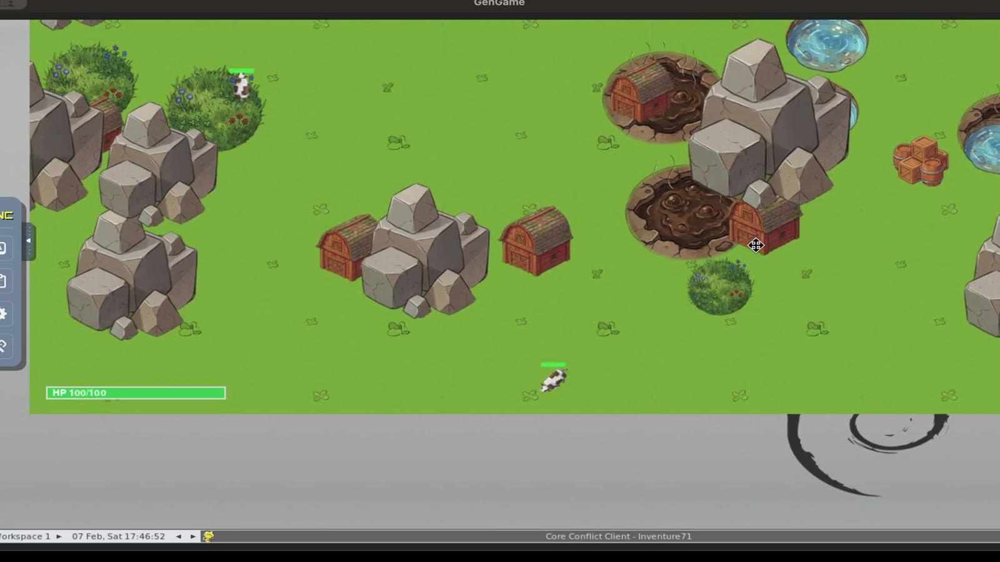
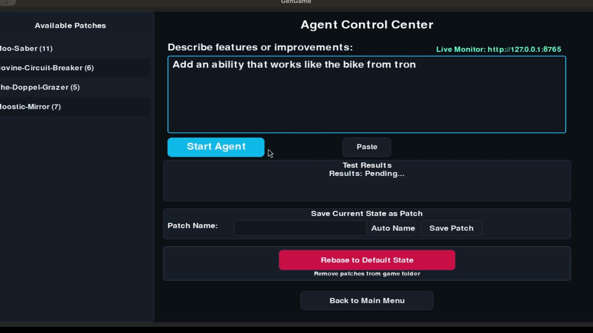
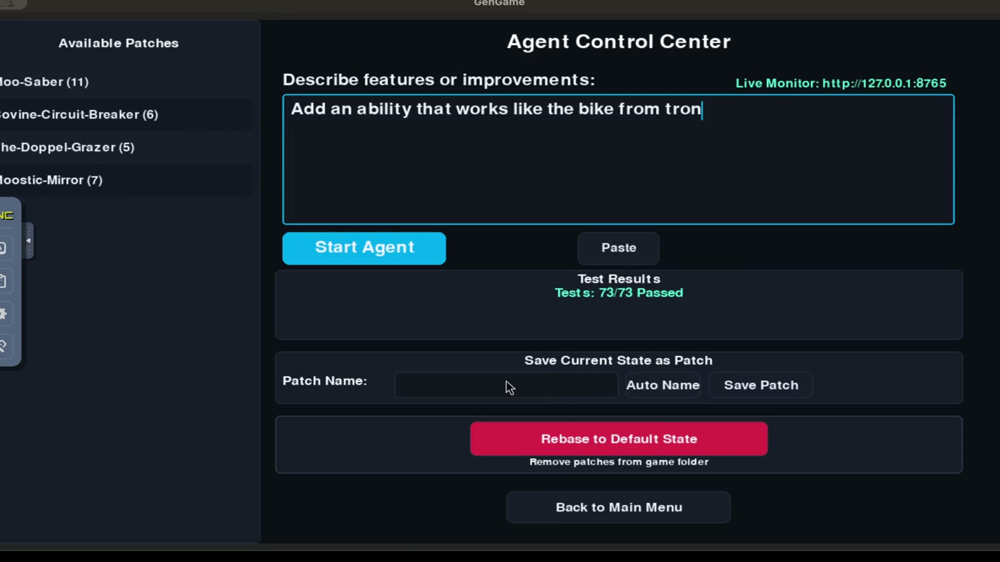

Multiplayer prototype · Python + Pygame
Core Conflict
A multiplayer arena where players request new mechanics for their cows. Agents write and test those changes before the match.

Generating mechanics in the lobby
- RequestA player describes an ability or a balance change. The agent works against the existing Python game.
- TestGenerated patches run through pytest. Failed tests feed a repair loop.
- MergeThe server combines the selected patches, using the agent when code changes conflict.
- PlayThe shared build is synchronized to the clients before the match begins.


Combining changes for multiplayer
Players can select different patches. The server merges them and distributes a shared game build to every client.
Generated mechanics modify an arena with movement, abilities, growth, and a shrinking safe zone.